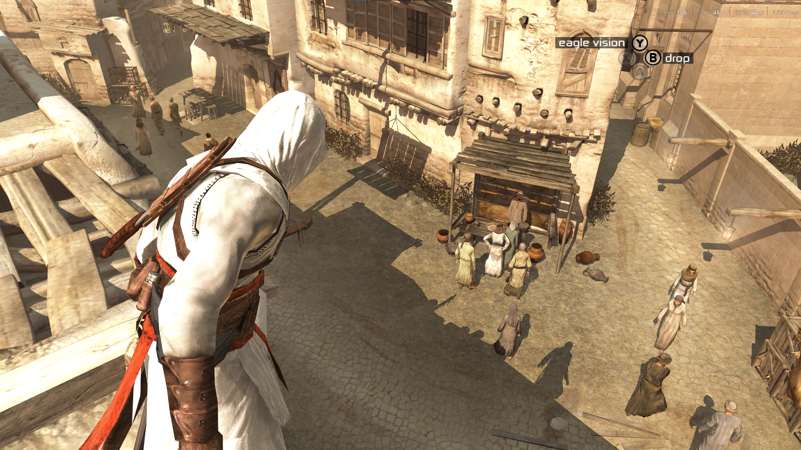

Portfolio | Developer | Designer
Hi! I’m a high school programmer and game developer passionate about creating systems that feel intuitive, responsive, and fun. I love exploring the intersection of code, design, and user experience, whether that’s building a fluid parkour and climbing system in Roblox, adding time-aligned subtitles to classic games with C++ and Python, or experimenting with machine learning to process large amounts of data. My projects often combine reverse engineering, algorithm design, and thoughtful interface work to turn complex ideas into polished, interactive experiences. I’m always excited to tackle challenging problems, learn new tools, and collaborate with others to make creative ideas come to life.
Technologies: C++, Python
Developed a C++ .asi plugin adding fully time-aligned subtitles to Assassin's Creed I.
Automated transcription of 2,000+ voice lines using Python and Whisper, exporting structured JSON with timing metadata.
Hooked internal game functions to synchronize subtitle display with audio playback and animation duration.
Parsed proprietary font files to calculate glyph metrics and dynamically size subtitle boxes for consistent on-screen layout.
Technologies: C++

Created a mod exposing hidden engine settings such as FOV, free cam, load distance, and time scale.
Reverse engineered undocumented systems using static analysis and runtime hooks to modify behavior safely.
Technologies: Lua
Designed an edge-intersection detection system backed by a bounding volume hierarchy (BVH) for fast environment queries.
Implemented inverse kinematics for climbing, including smooth interpolation between animation and IK-driven limbs.